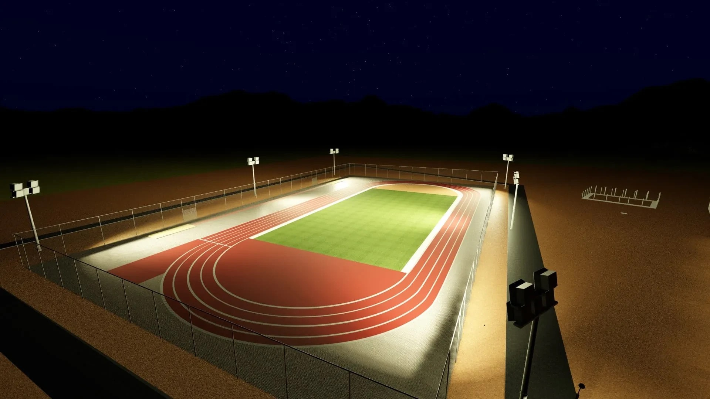
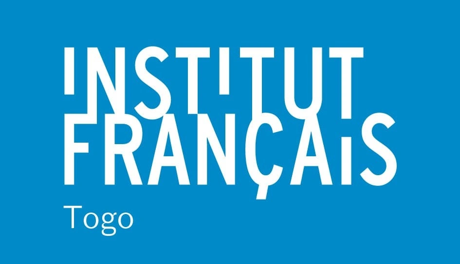
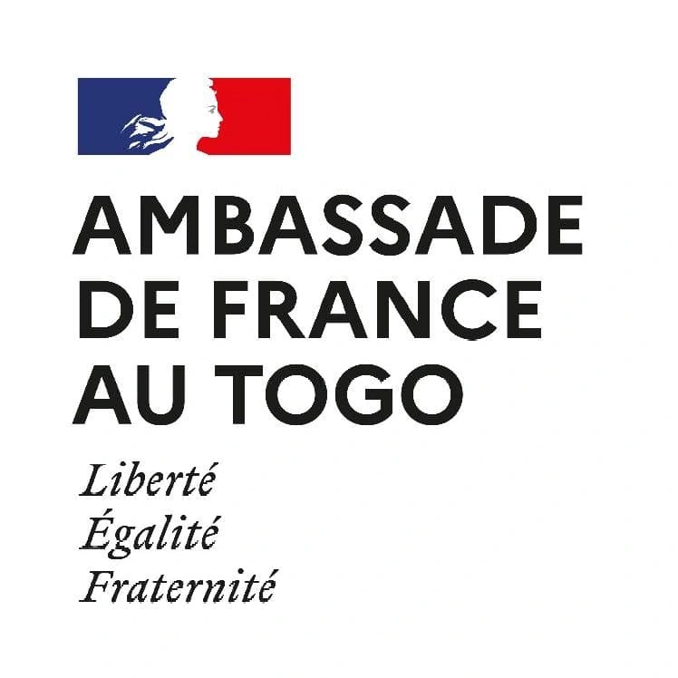
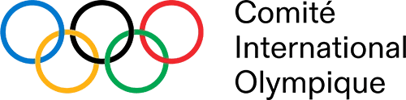
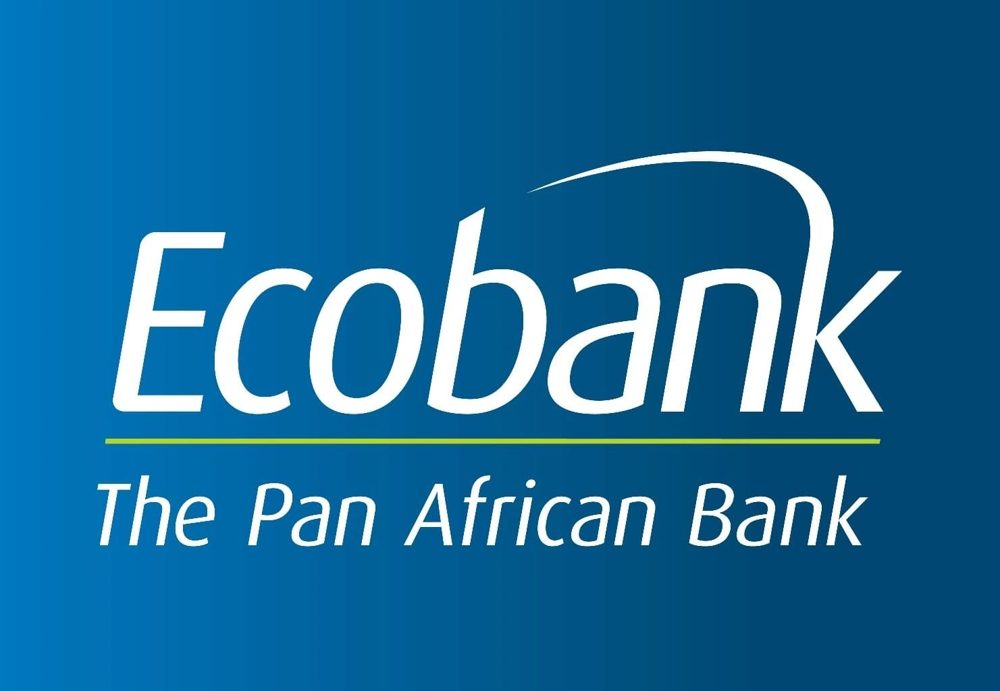

Educational Hub, Institut Français du Togo · Lomé
Educational Hub, Institut Français du Togo · Lomé
Committed to building better.
Your trusted construction and real estate partner in West Africa, from design to delivery.
 DAID Building · G+1 → G+7
DAID Building · G+1 → G+7Construction, real estate and energy, under one roof.
We specialise in construction, real estate development and energy project management.
With our expertise in project management assistance and our team of qualified professionals, we support you at every stage of your project, in line with safety standards and local regulations.
Our belief: living environments of the highest quality.
Eight areas of expertise, one point of contact.
AMO
Protect your investment and your schedule with our end-to-end supervision.
→02Design
Tailored architecture, technical coordination and value engineering.
→03Construction
Delivery of building and civil works projects, from foundations to finishes.
→04Design & Build
The one-stop solution for faster delivery and single-point accountability.
→05Real Estate
Strategic advice and development to increase the value of your land assets.
→06Sustainable Solutions and EDGE
Design of energy-efficient, environmentally responsible buildings.
→07Building Permit
Handling and obtaining your administrative permits in Togo.
→08Furniture
Well-designed, sturdy furniture made from locally available materials.
→
Support built around you, whoever you are.
Institutions, developers, companies, organisations, local clients and the diaspora.
Real Estate Developers
Maximize your project’s value through optimized cost and schedule management.
Make the most of your land →Private Companies
Obtain functional spaces delivered on time and tailored to your needs.
Build your premises →International Organizations
Ensure transparency, reporting, and compliance with international standards.
See our references →Diaspora
Invest from abroad with confidence thanks to clear and regular follow-up.
Invest from abroad →Projects delivered end to end, turnkey.
Our experience has led us to work in international and multicultural environments.

DAID Building
AMO · Lomé · 4,600 m²

Educational Hub, Institut Français du Togo
AMO, Construction · Lomé · 900 m²

Olympafrica Center
AMO, Design · Lomé · 5 ha

Place Akofin
AMO, Design, Construction · Lomé · 4 ha site

KAAS Villa
Design & Build, Construction · Lomé · Villa 270 m², pool 80 m²
 Terracotta claustra facade · IFT
Terracotta claustra facade · IFTAMO, in four steps.
A trusted third party who secures your project, from the initial need to handover.
- DefineThe project's needs, in line with your objectives.
- SelectThe best contractors to ensure quality work.
- ManageThe project, on time, on budget and to standard.
- SuperviseThe works, to ensure safety and quality.
A certification from the IFC, World Bank Group, for energy-efficient buildings.
They trusted us.
As well as Domus-Aurea SCI and the Olympafrica Foundation.

Institut Français du Togo

French Embassy in Togo

International Olympic Committee

Ecobank
Ministry of Sports of Côte d'Ivoire
Building well starts with being well informed.

Construction Materials in Togo: The Most Costly Mistakes to Avoid in 2026
Building in Togo is about more than simply buying cement, reinforcement steel and sand. On construction sites, many of the problems that arise are not caused by the initial budget, but by…

Building a House in Togo in 2026: The Complete Investor’s Guide
Chapter 1: Land in Togo, Securing Your Foundation Before the First Brick Building a house in Togo often begins with finding a plot of land you immediately fall in love with. But in real…

The Building Sector in Togo: A Strategic Driver of Green Finance?
As Togo strengthens its position as a major logistics and financial hub in West Africa, a quieter transformation is taking place across its cities and neighbourhoods. Long regarded as a…
Together, let's build the project you have in mind.
Our teams are here to listen, answer your questions, and support you throughout your projects.
- Phone
- +228 91 08 09 09
+228 22 22 15 63 - info@builtassets.com
- Opening hours
- Monday to Friday, 9 am to 6 pm
- Address
- Rue Atchambadé, Lomé
Région Maritime, Togo